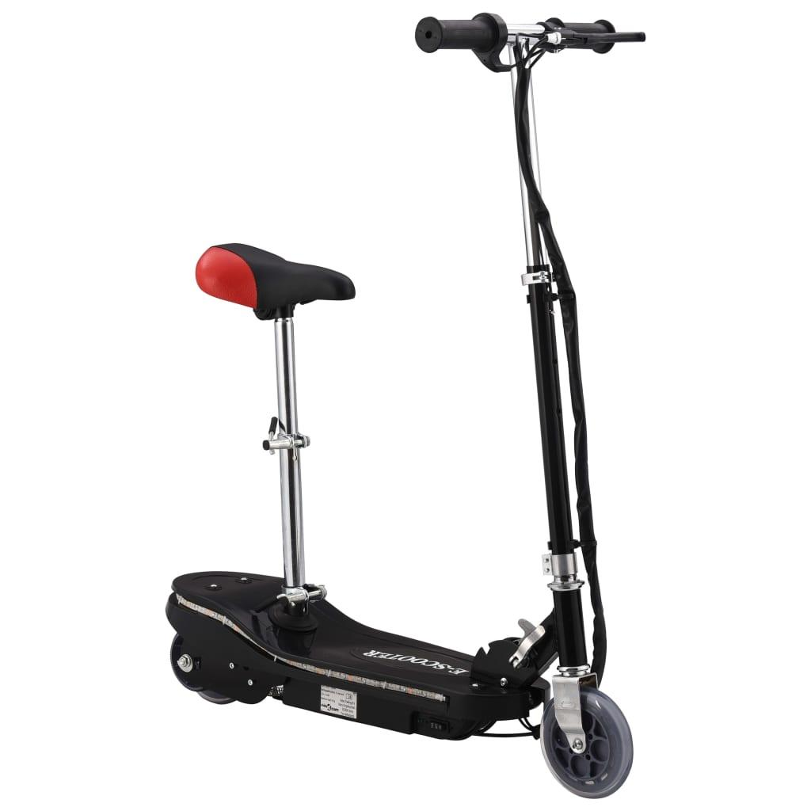

Welcome to Elektrinis paspirtukas
Paspirtukis.lt » Elektriniai Paspirtukai
2020.10.27 09:47
Menu Pradžia Elektriniai paspirtukai Apie Mane Kontaktai
Pradžia
Kas yra elektrinis paspirtukas?
Elektrinis paspirtukas yra dviratė transporto priemonė, varoma elektros varikliu, kurį maitina įkraunama baterija. Baterija įkraunama įkišant įkroviklį į įprastą sieninį lizdą namuose ar biure. Įprasto paspirtuko greitis svyruoja nuo 8 km / val. iki 40 km / val., tačiau dažnai ribojamas iki 25 km, kad išvengt papildomų rūpesčių. Galingesni elektriniai paspirtukai jau priskiriami mopedams.
Vienu įkrovimu elektra varomas paspirtukas nuvažiuos apie 20 kilometrų, tačiau šis atstumas ženkliai priklauso nuo įvairių veiksnių: paspirtuko modelio, variklio galios, vairuotojo svorio, slėgio padangose, nuolydžio, reljefo ir tt. Droselio / stabdžių valdikliai dažniausiai yra ant rankenos.
Elektriniai paspirtukai yra gana nesudėtingo dizaino, su jais paprasta važiuoti ir jais patogu naudotis. Todėl daugeliui modelių net nereikia vairuotojo pažymėjimo ar draudimo (kai variklis neviršija 1000 vatų, o maksimalus greitis 25 km / val.).
Vienas dalykas, dėl kurio suaugusiesiems skirti elektriniai paspirtukai skiriasi nuo kitų su akumuliatoriumi varomų transporto priemonių, yra stilių įvairovė. Tobulėjant akumuliatoriaus įkrovimo technologijai ir elektros variklio efektyvumui, paspirtukai kasmet tampa vis patrauklesni ir sparčiai populiarėja.
Kaip išsirinkti tinkamiausią paspirtuką sau?
Ne taip seniai elektrinis paspirtukas buvo skirtas tik vaikų žaislams. Tačiau tie laikai jau baigėsi ir dabar elektriniai paspirtukai tapo teisėta miesto transporto forma. Ši svetainė supažindins kaip rasti sau labiausiai tinkantį elektra varomą paspirtuką.
Rasite puikių patarimų į ką verta atkreipti dėmesį prieš užsisakant motorizuotą paspirtuką. Peržvelgsime techninius duomenis bei kodėl vertėtų pasirinkti vieną ar kitą modelį bei ką verta žinoti apie elektra varomų paspirtukų važinėjimąsi. Greitis, gaminio konstrukcija, įveikiama distancija, saugumo užtikrinimas bei kaina yra tik keli faktoriai, į kuriuos reikėtų atsižvelgti prieš įgyjant motorizuotą paspirtuką.
Geriausi elektriniai paspirtukai 2020 > > Geriausi elektriniai paspirtukai 2019 > >Apie mane
Aš iš pradžių nieko nežinojau apie motorizuotus paspirtukus ir nebuvau tikras, kurį elektrinį transporto modelį geriausia pasirinkti.
Yra daugybė skirtingų modelių, todėl tarp jų pasirinkti gali būti gana painu. Pradėjau projektą „Paspirtukis“, kad galėčiau pasidalinti savo patirtimi, tyrimais ir išvadomis bei padėčiau tau rasti geriausią variantą bei tuo pačiu ir pats įgyčiau naujų žinių.
Daugiau apie mane > > Paspirtukis.lt Copyright © 2020. Privatumo Politika Mes naudojame slapukus (angl. cookies) jūsų patogumui ir geresnei patirčiai svetainėje užtikrinti. Jei ir toliau naudositės šia svetaine, tuomet sutinkate su tuo. Gerai Privatumo politika